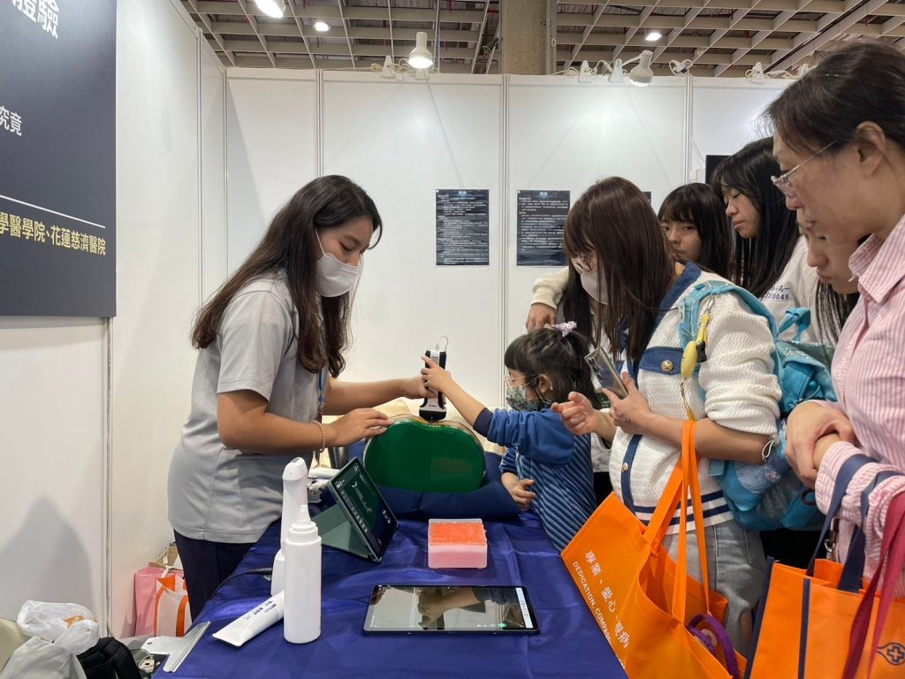
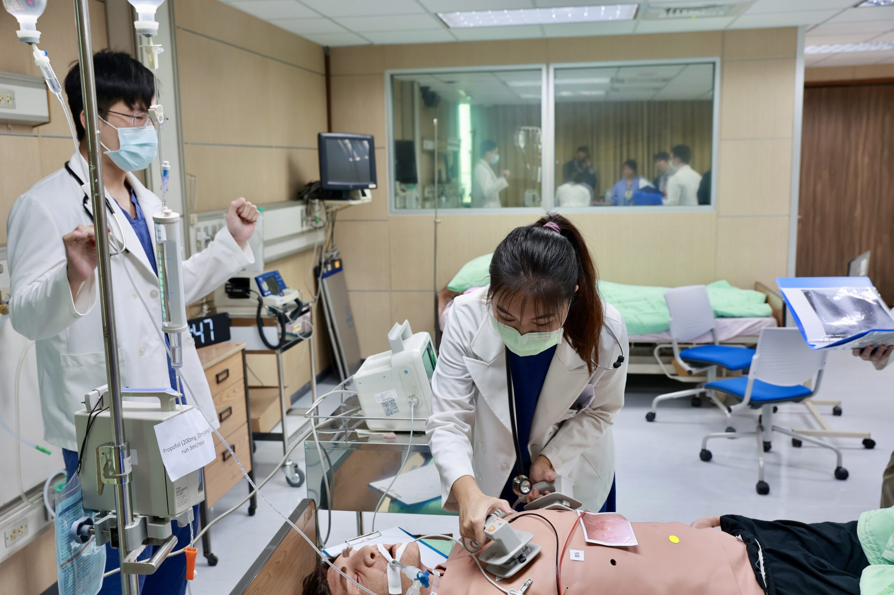
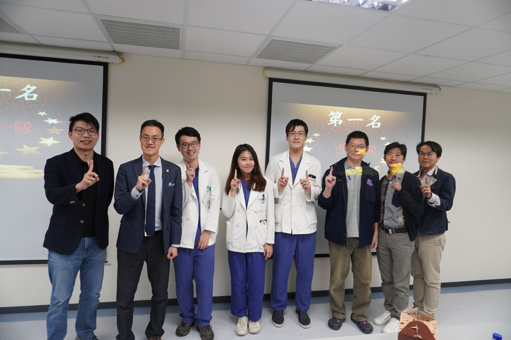
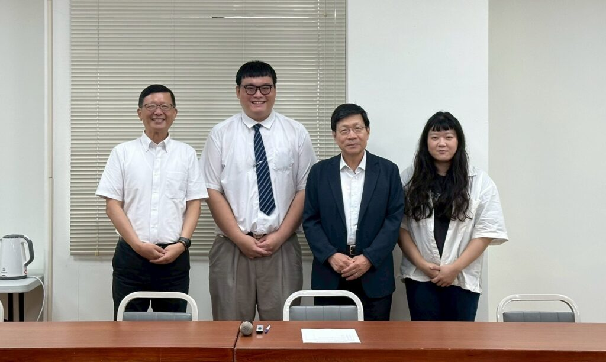
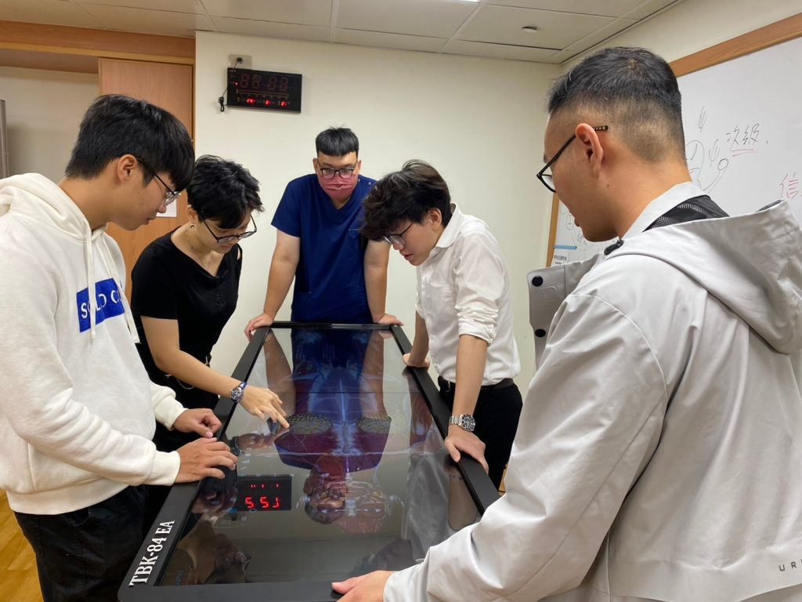
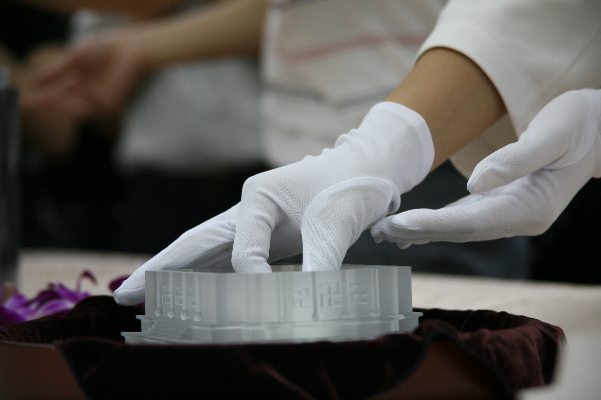
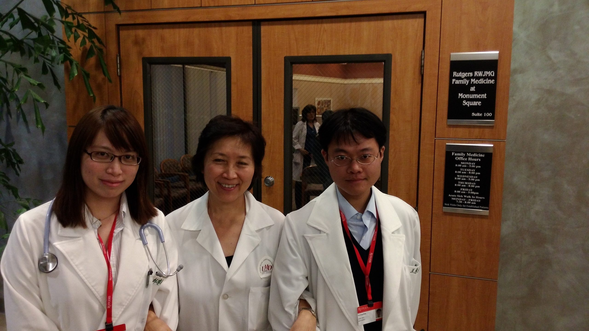
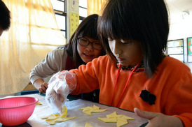
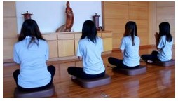
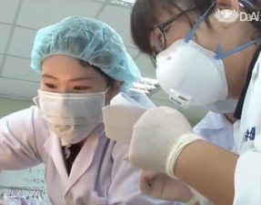

學生作品
首頁 ／ 學生作品
研究發表、醫療服務、小組學習與人文反思，記錄慈濟醫學生從課堂走向臨床的成長。
共 7 件作品

學生榮譽
全國醫學生高擬真競賽冠軍
本系三位同學於 2023 年奪得全國醫學生高擬真競賽冠軍；110 級張凱博同學亦獲 115 年全國大專優秀青年。

研究發表
研究啟蒙與學術傳承
本系以「醫學生論文發表獎勵」與 MD-MS 學碩士一貫學程鼓勵學生投入研究；醫學院也邀請中研院劉扶東院士蒞校指導研究生。

課程學習
同儕教學與小組學習
學長姐帶領學弟妹操作 3D 解剖台；搭配 PBL 問題導向小組討論，整合基礎與臨床知識。

課程學習
無語良師人文反思
學生在大體解剖課程前拜訪大體老師家屬，課程後參與送靈、入龕與感恩追思，並撰寫反思，記錄對生命與醫者責任的體悟。

國際交流
海外實習與國際交流
本系補助學生赴海外姊妹校醫學院與醫院進行約一個月的選修實習，拓展國際視野並分享慈濟醫學教育經驗。

醫療服務
見晴醫療服務隊
由醫學系與物理治療學系學生組成，長期陪伴花蓮萬榮鄉見晴國小的學童，每學期出隊並舉辦寒假營隊。
影像作品
由系學會與學生參與拍攝的系列影片。點擊影片封面，前往 YouTube 觀看。


投稿你的作品
歡迎本系同學提供研究成果、服務紀錄、照片或影片，經系辦審核後刊登於本頁。聯絡電話 03-8565301 分機 12040–12043。